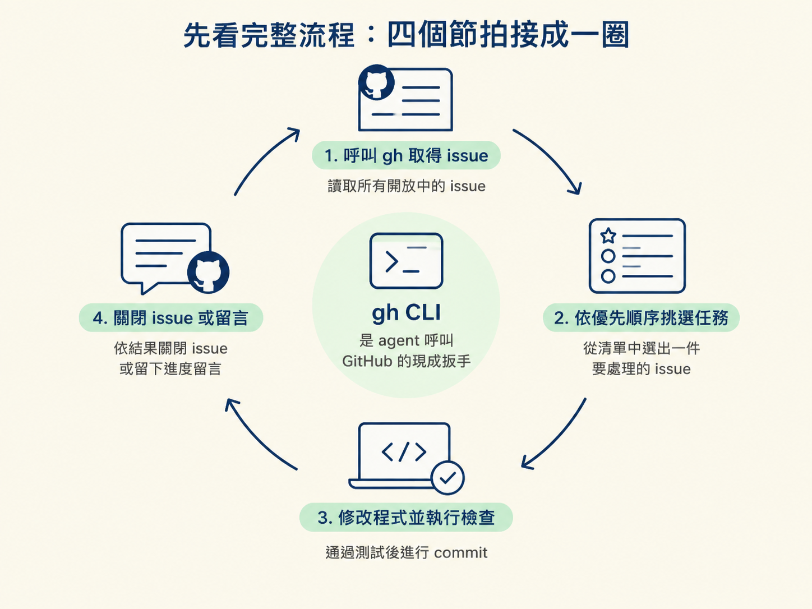
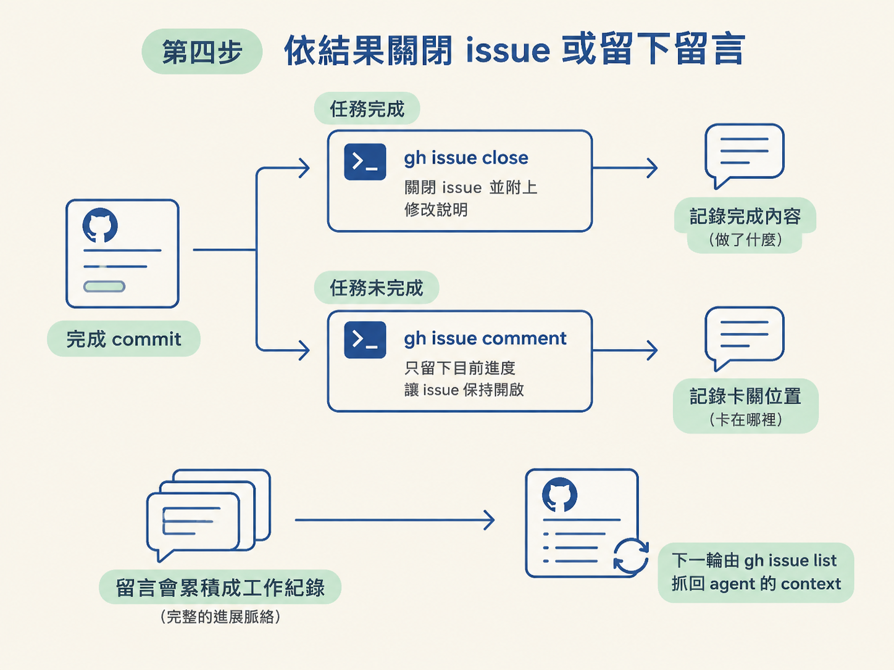

這一節會把 agent 接上 GitHub，讓它能從 Issues 佇列取得任務、挑選下一件工作、完成修改並 commit，最後依結果關閉 issue 或留下進度留言。
開始前，請先確認兩件事：你已經有能執行的 main.ts AFK 迴圈，也已經準備好上一節建立的私有 repo。另外，你還需要一組 GitHub personal access token；這一節先講怎麼把 token 注入沙箱，權限範圍下一節再說明。
把這次的工作想成一個會反覆運轉的 issue 迴圈。agent 每次被喚醒後，依序做四件事：
接下來照這四拍把 main.ts 接起來。核心不是再寫一套 GitHub API，而是讓 agent 使用它已經熟悉的 GitHub CLI，也就是 gh。對這個流程來說，gh 就像一支現成的扳手：agent 只要呼叫指令，就能讀取 issue 或更新 issue 狀態。

先在 main.ts 的 prompt 中加入 Sandcastle 的 prompt expansion。這是一段以驚嘆號 ! 開頭、用反引號包住的程式碼；執行時，指令輸出會直接嵌入 prompt。
!`gh issue list --state open --json number,title,body,comments`這行會抓回目前所有開放 issue 的 JSON。輸出的欄位包括：
number：issue 編號。title：issue 標題。body：issue 內容，也就是任務描述。comments：issue 留言。前三個欄位讓 agent 知道有哪些任務；comments 則是接續工作的關鍵。上一輪留下的進度會跟著 issue 一起帶回來，下一輪的 agent 才能知道之前做過什麼。
取得完整 JSON 後，接著使用第一步建立的任務選擇 prompt。讓 agent 依照這個順序判斷優先權：
這一步的結果，是從整份 issue 清單中挑出這一輪真正要處理的一件。若佇列裡同時有多張票，agent 會拿這把尺做取捨，不會照清單順序盲目執行。
選定 issue 後，讓 agent 按照原本的工作流程處理它：先探索 repo，再實作修改，接著執行型別檢查與測試，最後建立 commit。
這裡的流程和先前用 main.ts 執行單一任務時相同。差別只在任務來源：以前是 prompt 直接指定計畫，現在則是 agent 從 GitHub 的 issue 佇列自行挑選。
commit 之後，要求 agent 回到原本那張 issue，根據工作結果執行對應指令：
# 任務完成
gh issue close <issue-number> --comment "說明你做了什麼"
# 任務未完成
gh issue comment <issue-number> --body "目前進度到哪裡、還有什麼沒做"若任務已完成，就關閉 issue，並在關閉時附上說明。若任務還沒做完，就只留下目前進度，讓 issue 保持開啟。
這個分支很重要。issue 除了當待辦清單，也會慢慢變成一份工作紀錄：完成時記下做了什麼，未完成時記下卡在哪裡。之後回頭看留言串，就能掌握 agent 每個階段的進展。

而且第一步的 gh issue list 會再次抓取 comments，所以這些留言會被帶回下一輪 agent 的 context。你可以把多階段計畫放在同一張 issue 裡，讓 agent 每輪完成一段、留下一次紀錄，下一輪再讀回前面的留言繼續執行。
agent 要在沙箱裡呼叫 gh，必須先取得 GitHub 憑證。請把申請到的 personal access token 放進專案的 .env，Sandcastle 啟動沙箱時會把它注入成環境變數。
GitHub CLI 已經預先安裝在 Dockerfile 中，因此不需要另外處理 gh 的安裝。
警告：換了 repo 後，要先重建沙箱映像檔。切換到新的 repo 後，先執行以下指令，讓映像檔對應到新的專案：pnpm sandcastle docker build image映像檔重建完成後，再啟動迴圈：
npx tsx sandcastle/main.ts
建議先用一張小型 bug issue 試跑。正常情況下，你會依序看到以下結果：
gh issue list 的輸出出現在 prompt 開頭。這是一份可能只有幾十個 token 的 JSON。gh issue close，並附上修改說明。no more tasks，迴圈結束。最後到 GitHub 查看那張 issue：它應該已經被關閉，關閉留言中也會寫著 agent 修正了哪些內容。
做到這裡，agent 已經能把 GitHub issue 當成自己的任務佇列：先讀取開放票券，再挑選一件、完成修改並 commit，最後用關閉或留言回報結果。留言會持續累積，也會在下一輪重新進入 context，因此同一張 issue 可以承載多階段計畫。
整條接線流程可以記成四拍：用 prompt expansion 的
!`gh issue list …`把開放 issue 抓成包含number、title、body、comments的 JSON；用任務選擇 prompt 挑出一件工作；實作、取得回饋並 commit；最後完成就執行gh issue close並留言，未完成就執行gh issue comment。token 透過.env注入沙箱，gh已內建在 Dockerfile 中。換 repo 後，記得先重建映像檔，再執行main.ts。
現在 agent 已經能讀取佇列、執行任務並留下紀錄。下一個需要確認的問題是 token 的權限大小：把 GitHub 存取權交給會自行行動的 agent 前，應該只給它完成工作所需的最小權限。這會在下一節處理。